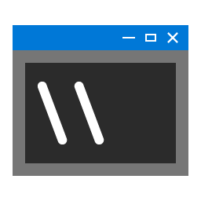

Whack Whack Terminal
Whack Whack Terminal is an extension for Visual Studio 2017 and 2019 that brings a full terminal experience into VS itself. This was a feature first made popular in VSCode and I wanted to bring the usefulness of that feature into mainline VS. Many software stacks these days require using the command line to perform part of the setup (npm, yeoman, gulp, go, etc.) By providing an integrated terminal extra features such as clickable build errors and automatic navigation to project folders can be added.
Since creating this extension, I have worked to bring the roll this extension into VS officially. An integrated terminal is available as of Visual Studio 2019 16.6! This represents 3 years of work by myself and others to greatly improve the developer experience.